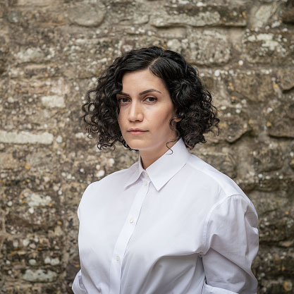

Kurdish Art
Shadi Harouni

About the Artist
Shadi Harouni is a visual artist and educator, Professor and Head of Video and Photography
at New York University Steinhardt Department of Art. Harouni's research and practice weaves
together modes and media — film and photography, sculpture and site-specific interventions
with text and folklore. She works with spaces and subjects imbued with the utopian dreams
and broken promises of liberation and revolution.
Harouni's films and photographs, set in time-worn dwellings, factories, and diminishing
mountain quarries throughout her ancestral Kurdistan are intimate studies of the histories
of resistance in the region, centering the contributions of women to ongoing struggles for
freedom and self-determination. Harouni's projects have been exhibited in biennials and
museums internationally, including the Queens Museum (NY), Kunstmuseum Bonn (DE), Prague
City Museum (CZ), Museo d'Arte Orientale (IT). She has been awarded prizes and fellowships
from the Gattuso Foundation, Civitella Ranieri Foundation, Skowhegan School of Painting and
Sculpture. Harouni is a 2024-25 Guggenheim Fellow in Film-Video.